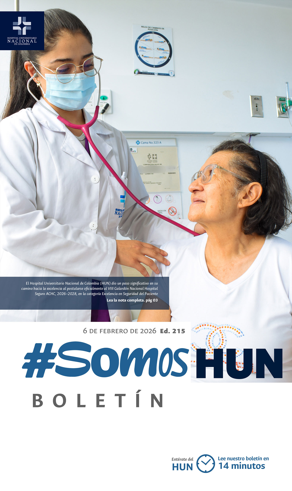
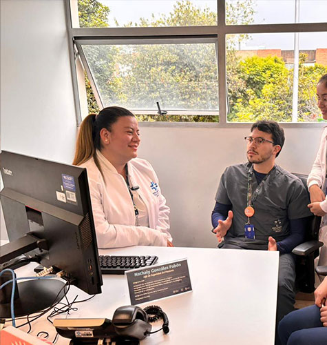
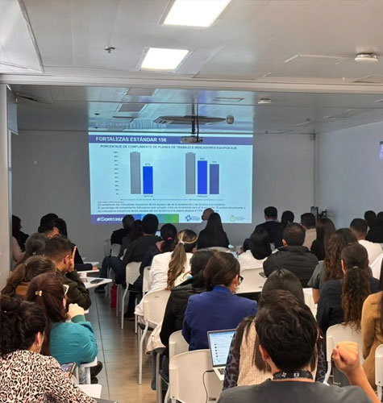
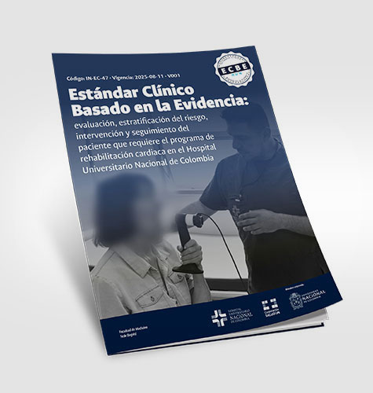
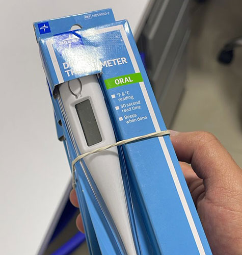
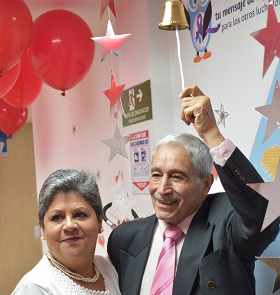

Ver todos los boletines
El HUN se postula al Galardón Nacional Hospital Seguro
El Hospital Universitario Nacional de Colombia (HUN) dio un paso significativo en su camino hacia la excelencia al postularse oficialmente al VIII Galardón Nacional Hospital Seguro ACHC, 2026–2028, en la categoría Excelencia en Seguridad del Paciente. Esta decisión refleja la madurez alcanzada por la institución en materia de calidad asistencial y su compromiso permanente con la seguridad de los pacientes, familias y equipos de salud.Leer más

Inició el IX ciclo de Acreditación en salud en el HUN
El Hospital Universitario Nacional de Colombia (HUN) dio inicio formal al IX ciclo de autoevaluación de Acreditación en Salud, un hito clave en el camino institucional hacia la excelencia, la mejora continua y el fortalecimiento de una atención segura, humanizada y centrada en el pacient.Leer más

Lanzamiento ECBE: Rehabilitación cardiaca
Se publicó el ECBE: evaluación, estratificación del riesgo, intervención y seguimiento del paciente que requiere el programa de rehabilitación cardiaca en el HUN.Leer más

Donación de termómetros y pulsioxímetros
El Hospital Universitario Nacional de Colombia (HUN) agradece al Policlínico Social del Norte la generosa donación de 600 termómetros y 588 pulsioxímetros, un aporte que fortalece nuestra capacidad de atención y contribuye de manera directa al bienestar de nuestros pacientes.Leer más

Pacientes tocaron la campana por la vida
En el marco del Día Mundial contra el Cáncer, el Hospital Universitario Nacional de Colombia conmemoró esta fecha con un acto simbólico que reunió a pacientes, familias y equipos de salud: tocar la campana de la vida, un gesto que representa el cierre de una etapa de tratamiento, la memoria de quienes ya no están y la esperanza para quienes continúan en el proceso.Leer más